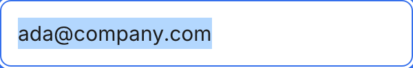
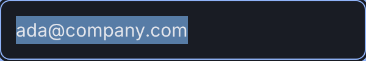
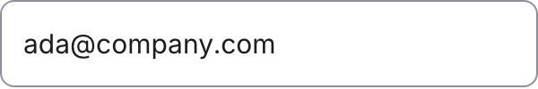
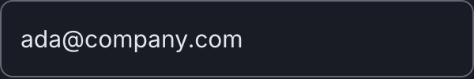

Atom
Input
The box a person types into. One anatomy, five content types and a textarea, which is the same box with a resting height.
Anatomy
.wf-inputthe box: 3:1 boundary, control fill, 8px radius, 12px padding.wf-input::placeholderthe hint inside the box, in secondary ink.wf-textareathe same box with a resting height and vertical resize only
Variants and sizes
Content
The type attribute, not a visual axis: every one of them looks identical and behaves differently. Listed because the census counted them and somebody will ask.
text
a name
email
an invite
password
log in and sign up
textarea
the contact form
The empty cells, and why they are empty
There is no size axis. An input is as tall as its padding and its type step, on every screen, and a smaller field would be a smaller target rather than a denser one.
When to use it
Everywhere a person gives Brio something: their name at sign up, an email at invite, the message on the contact form. It almost never stands alone: it stands inside a Field, which owns the label, the hint and the error line.
The rule, and the anti rule
Do this. Put the input inside a Field. The label belongs to the field, not to the input, and a field without a label is a control nobody can name out loud.
Not this, use Copy field instead. Do not use an input to show a value that cannot be edited. A read only string is text, and a value the person is meant to copy is a Copy field.
States
Focus does two things at once here and both are deliberate: the ring appears outside the box and the boundary itself turns to the action colour, so the field is findable both by the ring and by its own edge.
Two deltas from the family. Everything else answers as the Button does. Each pair is the light theme on the left and the dark theme on the right, captured from the live component on this page, not drawn. They are re-taken by the check at step 9, which fails on a byte shift.


focusThe named difference: focus does two things here and one on a button. The ring appears AND the boundary itself turns to--line-action, so an empty field is findable by its own edge as well as by the ring

disabledsame token as the Button,--opacity-disabledRe-take these with node scratchpad/states.js /tmp/jobs.json against a local server on port 8931.
Technical
| Level | 1, atom |
|---|---|
| File | design/system/components/input.css |
| Roles it reads | --bg-control, --color-focus, --line-action, --line-control, --text-primary, --text-secondary |
| In the product | 32 of 99 screens |
| In colour | 7 screens: checkin-entry, checkin-expired, contact, signup-error, signup, team-roster-manage, team-roster |
Markup to copy
<div class="kit-stack" style="max-width:340px"> <input class="wf-input" type="text" placeholder="Ada Lovelace"> <input class="wf-input" type="email" placeholder="ada@company.com"> <textarea class="wf-input wf-textarea" placeholder="How can we help?"></textarea> </div>